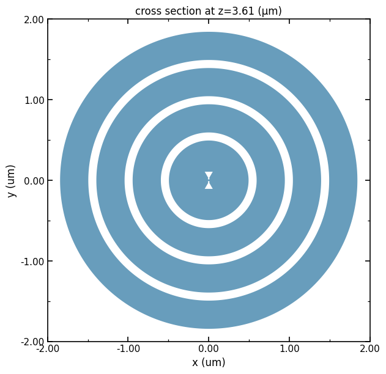
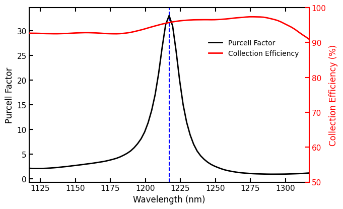

Quantum Photonics
Small sources.
Light, shaped.
FDTD design of emitter cavities, quantum-dot extraction structures, and integrated grating couplers.
Nanophotonic design · FDTD simulation
Shaping emission.
Collecting quantum light.
Selected simulation projects carried out during my research internship at the Korea Institute of Science and Technology (KIST): silicon emitter cavities, quantum-dot extraction structures, and focused grating couplers.
Research report: Design and Simulation of Nanophotonic Devices
Angel Salazar, Hyeung Joo Lee, Ga Hyun Cho, Sung-Yul L. Park, and Jin-Dong Song.
Summary
Efficient quantum light sources require control over both emission and optical collection. These projects use finite-difference time-domain (FDTD) simulations to investigate complementary parts of that problem: enhancing emission near silicon W centers, redirecting light from quantum dots, and coupling light into an integrated waveguide.
The work compares conventional and modified circular Bragg grating cavities, pyramidal semiconductor islands and flat reference structures, and a focused apodized grating coupler designed for the W-center emission wavelength near 1218 nm.
Methods
- Three-dimensional electromagnetic modeling in Python with Tidy3D, using point-dipole emitters, material-dependent optical properties, and absorbing boundaries.
- Parameter sweeps over cavity and bowtie dimensions to compare emission enhancement, resonance position, and linewidth.
- Near-field maps and angular far-field projections to study confinement and collection within a specified numerical aperture.
- Waveguide-mode analysis to evaluate coupling into the fundamental TE mode in the focused grating-coupler project.
The values below are simulation results from the research report and saved notebook outputs. They describe the modeled configurations rather than measured device performance.
Emitter–cavity interaction
Circular Bragg grating & bowtie cavities
This project explores circular Bragg gratings (CBGs, or bullseye cavities) for W-center emitters in silicon, targeting the zero-phonon line near 1218 nm. A central bowtie feature concentrates the field at the emitter, while grating geometry and substrate choice provide additional design variables.


| Configuration | Reported Purcell factor |
|---|---|
| Conventional CBG | ~5 |
| Apodized CBG | ~8.4 |
| CBG + bowtie, silicon substrate | ~33 |
| CBG + bowtie, gold substrate | ~50 |
The bowtie and substrate comparisons illustrate how local confinement and the surrounding optical stack can change emission enhancement. These are selected configurations with different design parameters.


In this notebook, the quantity labeled “Purcell factor” is evaluated as the monitored flux ratio between the patterned cavity and an unpatterned SOI reference. The collection curve is normalized to the upward hemisphere, so it is not an absolute fraction of all emitted photons. The saved run targets 1217 nm, close to the report’s 1218 nm design wavelength.
Quantum-dot light extraction
Pyramidal islands versus a flat reference
FDTD simulations compare a point-dipole quantum emitter in an Al0.3Ga0.7As pyramidal structure on GaAs with emission from a flat reference. The objective is to quantify collection and the spatial redistribution of the electric field.
For a target wavelength of 729 nm, the report identifies an optimized island with a height of 120 nm, a 160 nm base, a 10 nm top, and an emitter depth of 18 nm below the top. The reported collection efficiency reaches approximately 27.15% at NA = 0.8.
This value belongs to the island simulation and its collection definition; it should not be directly compared with the upward-normalized cavity collection curve above.
Integrated optical coupling
Focused apodized grating coupler
This project designs a focused apodized grating coupler for efficient coupling at the W-center wavelength of 1218 nm. The modeled stack uses a 220 nm silicon device layer and a 2 µm buried oxide, with an 85 nm etch depth and 25 grating elements.
The report gives a peak coupling efficiency of 56.20% at 1218 nm, evaluated from the power coupled into the fundamental TE waveguide mode. This is a mode-coupling metric, distinct from emitter enhancement and free-space collection.
Conference presentation
QD 2026 · Poster P2-23
Photonic Design of a Circular Bragg Grating Resonator for Single-Photon Emission
Angel Salazar, Hyeung Joo Lee, Ga Hyun Cho, Illia Tikhonov, Sung-Yul L. Park, Suk-In Park, Mahdi Miremadi, and Jin-Dong Song.
I presented this work as a poster at the 13th International Conference on Quantum Dots (QD 2026), in Busan, South Korea. The final program lists it in Poster Session 2 on May 19, 2026, from 18:00 to 19:30, in the Sicily Room.
Code & resources
The project repository brings together my FDTD work. The figures on this page are extracted from saved outputs in the supplied Bullseye-Bowtie.ipynb notebook; the broader project overview follows the research report Design and Simulation of Nanophotonic Devices.